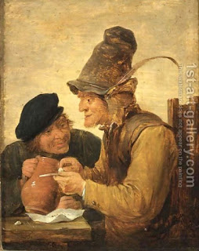

Nazir 2 - What is a nazir?
A nazir is a person who makes a vow which includes abstaining from wine, cutting his hair or coming into contact with a human course. It is wrong to become a nazir as self-punishment. Rather, if one chooses to become a nazir, it should be for self-improvement, and such a one is called "Holy to God."
To become a nazir, one must make a declaration to this effect, and fully mean in. One does not become a nazir by mistake. If he changes his wording, and instead of "nazir" says, for example, "nazik" - since this was a common form in these days - he would also become a nazir.
Finally, if one makes an incomplete statement, such as "I will become..." and does not conclude this, but there is enough evidence to what he really means, for example, by a nazir passing by and him pointing at this nazir - this is also effective.
Art: Two Peasants Drinking At A Table By David The Younger Teniers